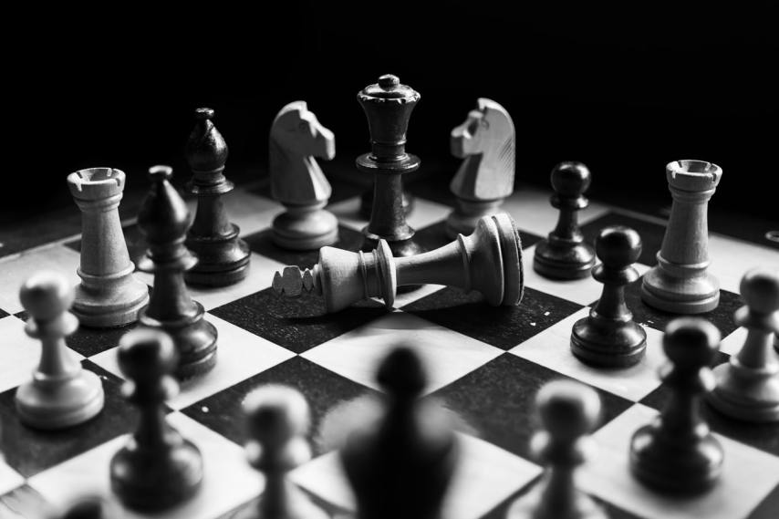

Opis
Szachy – rodzina strategicznych gier planszowych rozgrywanych przez dwóch graczy na 64-polowej szachownicy, za pomocą zestawu bierek (pionów i figur). Popularnie, choć nieprecyzyjnie, szachami nazywa się również wspomniane bierki. Międzynarodowy Komitet Olimpijski uznaje szachy za dyscyplinę sportu. Szachy należą do gier z doskonałą informacją.

Przeciwnicy dysponują zestawami bierek w odmiennych kolorach. W skład każdego z nich wchodzi szesnaście bierek: król, hetman (potocznie zwany też damą, damką, królową lub królówką), dwa gońce (z niemieckiego nazywane czasami lauframi), dwa skoczki (zwane też popularnie końmi lub konikami), dwie wieże oraz osiem pionów.
Wartość figur szachowych może być absolutna lub względna. Przy założeniu, że wartość absolutna piona wynosi 1, wartości statyczne figur przedstawiają się następująco:
- hetman – 9 (według niektórych autorów 9,5 lub 10) punktów
- wieża – 5 punktów
- skoczek lub goniec – 3 punkty
- król – nie ma przypisanej wartości ze względu na to, że nie można go wymienić, ale szacuje się jego siłę na 4–5 punktów.
W konkretnej sytuacji na szachownicy wartość względna jest ważniejsza od wartości absolutnej. Wynika to z tego, że w określonych przypadkach figury mogą mieć różne wartości, np. w pozycjach o charakterze zamkniętym względna wartość skoczka przewyższa wartość gońca i odwrotnie – w pozycjach otwartych wartość gońca jest większa niż skoczka (a tym bardziej pary gońców nad parą skoczków). Podobnie dochodzący do pola przemiany pion może mieć wartość o wiele wyższą niż 1 punkt.
Jeśli jeden z graczy ma figury o sumarycznej wartości punktowej większej niż drugi, jest to podstawą do stwierdzenia, że ma przewagę materialną. Jednak nie zawsze musi ona przesądzać o wygranej – czasami decyduje tzw. przewaga pozycyjna. Debata nad wartością skoczków i gońców (dotycząca też kolorów pól, po których poruszają się gońce) również jest natury pozycyjnej i nie ma sensu bez odniesienia do konkretnej sytuacji na szachownicy. Z kolei dwie wieże mają przewagę nad hetmanem, mimo że gra tym ostatnim jest z reguły łatwiejsza.
Wartości punktowe poszczególnych figur mają charakter umowny i zależą od konkretnej pozycji na szachownicy. Są jednak dobrą wskazówką dla początkujących szachistów, zwłaszcza przy podjęciu decyzji przy wymianie figur. Wówczas w oparciu o wartości punktowe poszczególnych figur mogą oni stosować następujące reguły:
Przy przewadze materialnej powinno dążyć się do uproszczenia pozycji (poprzez wymianę figur), sprowadzając grę do końcówki.
Wartość punktowa pionka rośnie wraz ze zbliżaniem się do pola przemiany (patrz rozdział „Reguły”).
Wartość skoczka zależy od charakteru pozycji: w zamkniętych pozycjach skoczek (3,4) ma przewagę nad gońcem (3), natomiast w otwartych pozycjach na odwrót (skoczek 1,7, goniec 3); wszystko zależy od konkretnego ustawienia figur na szachownicy.
Wartość króla rośnie wraz ze zmniejszaniem się liczby figur na szachownicy: jest on wtedy znacznie mniej narażony na bezpośredni atak matowy przeciwnika przez co staje się aktywną bierką o wymiernej sile bojowej.